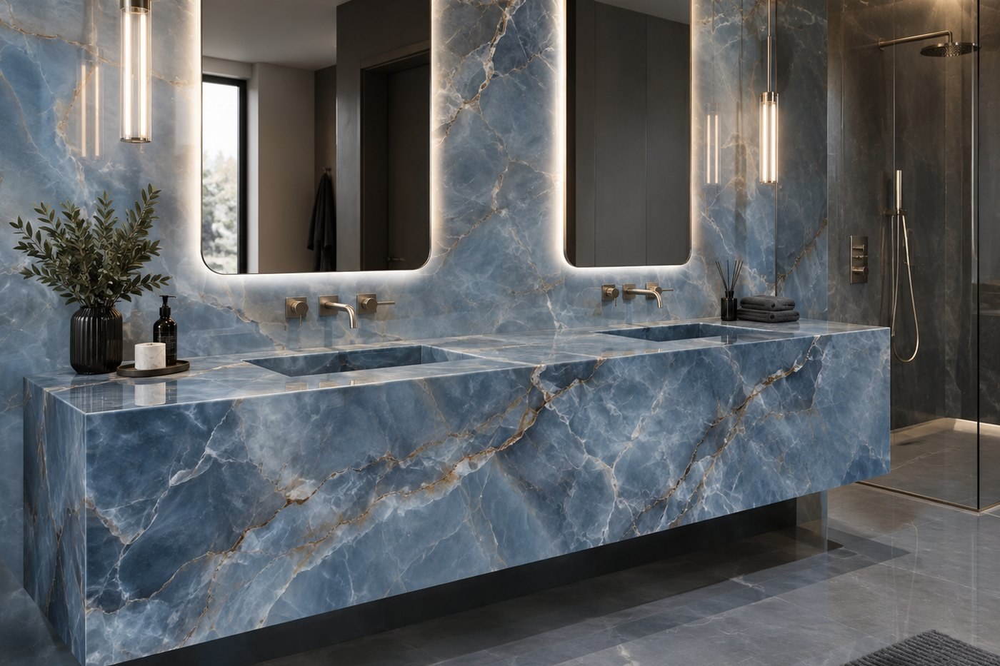

Effortless beauty.
Fewer grout lines. Less cleaning.
When's the last time you scrubbed the grout lines in your shower? If you're anything like us, it's been way longer than you want to admit — and you're going to have to do it again in a few months.
Fewer grout lines don't just look cleaner. They mean fewer places for soap scum, dirt, and moisture to build up in the first place. A standard tiled shower can have hundreds of feet of grout. With large format porcelain, that number can drop to around 50 feet, depending on the layout. One less thing on your cleaning list.

Stunning looks
The surfaces in your home make a big difference. Instead of cutting a beautiful stone pattern into dozens of small tiles, large format porcelain lets you see the design the way it was meant to be seen. More of the pattern, fewer interruptions, and a much cleaner overall look.
A shower can look like it was carved from a single piece of stone. A backsplash can run from countertop to ceiling without breaking up the design. A statement wall can become exactly that — a statement. And because porcelain comes in so many stone-inspired designs, you can carry that look throughout your home — from the kitchen and bathroom to the fireplace, accent walls, and even outdoor spaces.

Easy to live with
Get the look of marble, quartzite, granite, and other high-end stone without most of the upkeep that comes with them. Porcelain is non-porous, so it doesn't soak up spills, oils, or everyday messes. In a wet space like a shower, that also means it resists mold and mildew a lot better than grout and porous stone do.
It never needs sealing the way some natural stone does, and everyday cleanup is just wipe and go. Wine spill? Wipe it up later. We won't tell. Luxury shouldn't come with a maintenance schedule.

Durable
Leave it in direct sun on a patio for ten summers, and it'll still look like day one. Large format porcelain resists fading, scratches, and everyday wear better than almost anything else you'd put in that spot, indoors or out.
It's tough enough that a kitchen knife won't scratch it. Honestly, we recommend using a cutting board anyway — not to protect the porcelain, but to keep your knives from going dull. That's how durable we're talking.

Lighter than stone
A porcelain panel weighs a fraction of what a comparable stone slab does, which is exactly why it makes such an excellent solution for statement walls. Floor-to-ceiling feature walls, fireplace surrounds and double-height entries are all possible without the structural support a stone slab of that size would demand. In some cases it can even go straight over an existing surface.

Not sure it's the right choice?
Tell us the application. If porcelain is the wrong answer, we'll say so.
Ask us